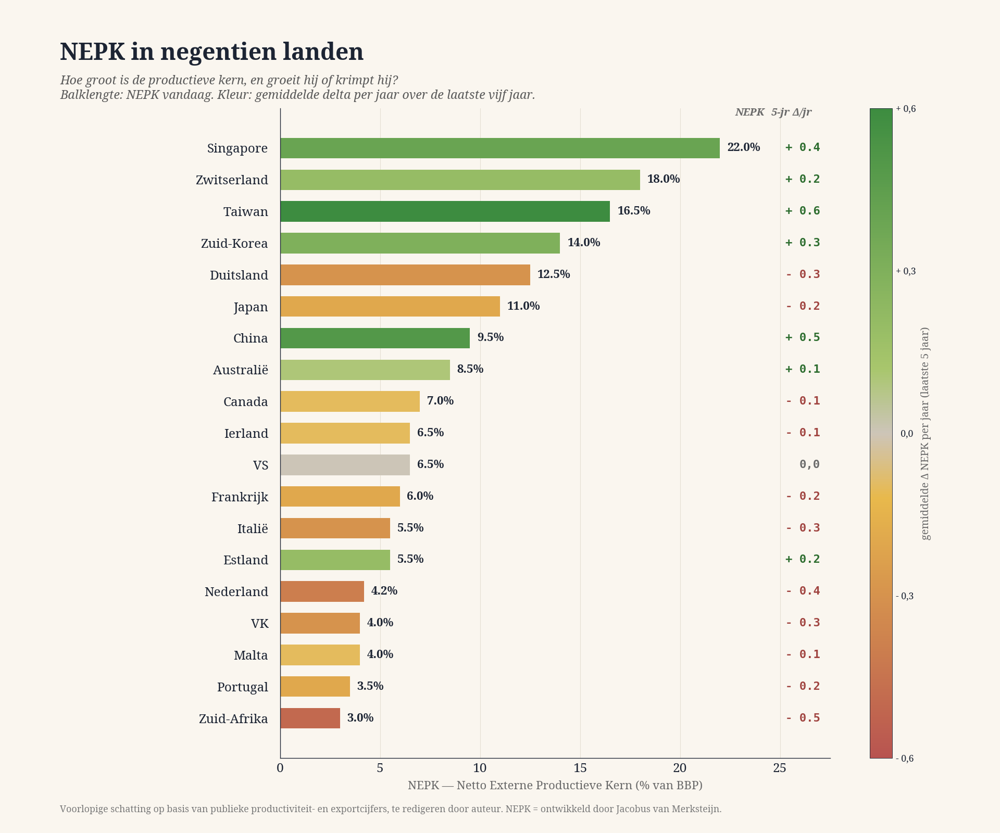
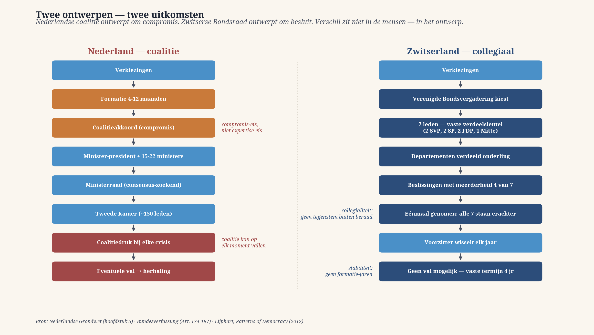

I sette di Berna
Una democrazia collegiale come chiave di volta — ciò che la Svizzera fece nel 1848 e che noi avremmo potuto adottare, e ciò che i dati NEPK di ventuno paesi mostrano al riguardo.
Chiave di volta · 15 min di lettura

Nel primo articolo di questa edizione ho fatto riferimento agli 七つ道具 — i sette strumenti di Benkei, il monaco guerriero che difese un ponte con sette armi diverse. In questo articolo conclusivo mi riferisco ad altre sette persone. Non sette armi di una sola persona, ma sette persone che governano insieme un unico paese. Sono i Consiglieri federali della Svizzera, eletti dal parlamento per quattro anni, ciascuno a capo di un dipartimento, con una presidenza che ruota annualmente tra loro.
Chi accosta questi sette ai sette di Benkei vede non soltanto un parallelismo letterario. Vede la soluzione a ciò che tutti gli articoli precedenti di questa edizione hanno portato alla luce.
L’errore di progettazione americano
Nel 1787 i Padri fondatori progettarono a Filadelfia una costituzione progressista per il suo tempo. Separazione dei poteri, sistema bicamerale, elezione indiretta del presidente attraverso il collegio elettorale, una magistratura indipendente. Ma su un punto fecero una scelta che ha resistito male alla prova del tempo: concentrarono il potere esecutivo in una sola persona, eletta per quattro anni, con un potere reale continuativo su un apparato immenso.
I Fondatori erano consapevoli dei rischi. James Madison mise esplicitamente in guardia, nel Federalist Paper n. 10, contro ciò che chiamava factions — gruppi capaci di lasciare che i propri interessi di breve ciclo prevalgano sul benessere generale. Ciò che non poteva prevedere era quello che la democrazia dei mass media del ventesimo secolo avrebbe fatto con questa concentrazione: una sola persona vince un’elezione di popolarità su uno o due temi dominanti e ottiene poi per quattro anni il potere esecutivo su tutti i temi contemporaneamente. L’elettore che nella cabina pensa all’immigrazione o alla riduzione delle tasse, dà così implicitamente il proprio benestare a decisioni riguardanti la politica dei semiconduttori, le infrastrutture, l’orientamento monetario e il commercio estero — temi sui quali non gli è stato chiesto nulla e sui quali generalmente non è in grado di formarsi un’opinione.
È esattamente l’errore di gerarchia che ho descritto nell’articolo 03 — L’ordine dimenticato —, ora al livello più alto della progettazione politica. Un solo voto di popolarità viene moltiplicato su tutti gli ordini contemporaneamente. Una preoccupazione di terzo ordine eleva una persona al ruolo di decisore di primo ordine.
La correzione svizzera del 1848
Nel 1848 la commissione costituzionale svizzera si riunì a Berna. Guardò alla costituzione americana come modello. Ne riprese molto: struttura federale, parlamento bicamerale, separazione dei poteri, diritti fondamentali. Ma sul punto del potere esecutivo si discostò consapevolmente.
Laddove l’America insediò un solo presidente, la Svizzera optò per sette Consiglieri federali — un organo esecutivo collegiale. Ogni membro dirige uno dei sette dipartimenti federali. La presidenza — il Bundespräsident svizzero — passa ogni anno da uno all’altro dei sette, in base all’anzianità. Nessuno accumula potere personale. Nessuno diventa un leader carismatico. Il Bundespräsident è letteralmente primus inter pares — primo tra pari — per un anno, poi si fa da parte.
Inoltre gli Svizzeri introdussero una seconda correzione. Laddove gli Americani installarono, attraverso il suffragio a più gradi, un filtro tra il popolo e il presidente, gli Svizzeri scelsero l’opposto: la democrazia diretta su questioni concrete. Da tre a quattro volte l’anno ai cittadini svizzeri viene sottoposta una proposta specifica — una legge, una modifica costituzionale, un trattato internazionale — e loro votano sì o no. Nessun travestimento di una preferenza politica attraverso una persona. Nessun assegno in bianco. Un tema alla volta, formulato con chiarezza, un voto.
L’effetto di queste due scelte progettuali è che in Svizzera commettere un errore di gerarchia diventa straordinariamente difficile. Chi vuole che una decisione di primo ordine venga presa attraverso un voto di terzo ordine deve prima convincere sette Consiglieri federali di partiti diversi, poi due camere parlamentari e, eventualmente, anche un referendum in cui il cittadino non vota su una persona, ma sul contenuto. Il sistema incorpora un filtro che separa il terzo ordine dal primo.
Cosa dicono i numeri
L’effetto di questa differenza progettuale è visibile nei freddi dati numerici. La Svizzera — un piccolo paese senza materie prime, senza porti marittimi, con quattro lingue ufficiali e complesse contrapposizioni interne — si colloca praticamente in cima, tra i primi tre paesi al mondo, secondo ogni indicatore di benessere. Il PIL pro capite ammonta nel 2024 a circa 106.000 dollari — più di una volta e mezza quello dei Paesi Bassi (65.000) e oltre il doppio di quello della Germania (52.000). La produttività per ora lavorata è pari a 98,5 dollari (PPP) — comparabile a quella di Singapore e superiore a quella di ogni Stato membro dell’UE.
Più importante di questo singolo dato è il modello che emerge quando mettiamo a confronto i NEPK della Svizzera con quelli di altri paesi. NEPK — Nucleo Produttivo Esterno Netto — è un indicatore che ho sviluppato in lavori precedenti per guardare oltre il dato del PIL e capire cosa un paese produca realmente in proprio e conservi per i suoi cittadini, al netto del transito, della contabilità finanziaria ombra e della proprietà straniera dei mezzi di produzione.

Ciò che mostra il grafico non è casuale. Due paesi sono in testa: Singapore e Svizzera. Entrambi hanno incorporato nel proprio sistema di governo una protezione gerarchica — Singapore attraverso una tecnocrazia a partito dominante con un mandato esplicito per la politica economica di lungo periodo, la Svizzera attraverso il potere collegiale e la democrazia diretta sulle questioni concrete. Due strade opposte, lo stesso risultato: un nucleo produttivo ampio e in crescita stabile.
Nella fascia medio-alta troviamo Taiwan, la Corea del Sud e — abbastanza sorprendentemente — la Cina, tutti e tre con valori delta positivi che indicano un nucleo produttivo ancora in crescita, costruito sulla disciplina qualitativa giapponese discussa nel primo articolo.
Particolarmente interessanti sono anche due fanalini di coda dell’UE che, a ben vedere, non si rivelano affatto tali. La Polonia, con l’8,5 per cento, è alla pari con l’Australia, ma registra un aumento annuo considerevolmente maggiore, pari a +0,4 punti percentuali — il più alto dell’intera Unione Europea. Dal 2004 la Polonia ha costruito sistematicamente la propria industria manifatturiera in stretta collaborazione con la filiera industriale tedesca, diventando così la vincitrice silenziosa della ristrutturazione europea. L’Estonia — un piccolo paese con appena 1,3 milioni di abitanti — mostra con +0,2 un incremento analogo a un livello più basso, costruito attraverso un progetto di economia digitale (e-residency, governo digitale, esportazioni orientate alle ICT). Polonia ed Estonia sono i due paesi europei che negli ultimi cinque anni hanno perseguito consapevolmente una disciplina gerarchica della produttività, e i dati ne mostrano il risultato.
Gli altri ritardatari europei — Germania, Francia, Italia, Regno Unito, Paesi Bassi, Malta, Portogallo — mostrano colori arancioni e rossi. Non sono soltanto i Paesi Bassi a perdere il proprio nucleo produttivo; lo fa praticamente tutta l’Europa. Ma i Paesi Bassi, con il 4,2 per cento, si trovano in testa alla metà inferiore, con il secondo maggiore calo annuo: 0,4 punti percentuali all’anno. Solo il Sudafrica — un Paese flagellato dall’instabilità industriale e dalla turbolenza politica — cala più rapidamente.
La Lettonia, con il 4,5 per cento e un delta stabile, si colloca appena al di sopra dei Paesi Bassi — un Paese baltico che non registra alcun calo e che quindi nel 2026 ottiene strutturalmente risultati migliori del nostro Paese. Notevole è inoltre l’Irlanda: con un PIL pro capite di gran lunga superiore a quello dei Paesi Bassi, ottiene su NEPK un risultato piuttosto modesto (6,5 per cento), perché gran parte della produzione irlandese consiste in un transito multinazionale che non si traduce in un potere d’acquisto duraturo per i cittadini irlandesi.
Questa non è una classifica di cui andare fieri. È un avvertimento.
I tre ritardatari europei
Ciò che il grafico mostra inoltre, e che sulla stampa olandese non viene mai presentato in questi termini, è che le tre grandi economie europee con la struttura di governo più pesantemente centralistica — Francia, Regno Unito e Paesi Bassi — si trovano tutte e tre nella metà inferiore e sono tutte e tre in calo. Ciò che hanno in comune non sono le dimensioni né la posizione geografica. Ciò che hanno in comune è un sistema di governo fortemente personalizzato, con leader esecutivi dominanti — un presidente francese, un primo ministro britannico, un primo ministro olandese — che replicano ciascuno, nella propria variante, l’errore progettuale americano.
La Germania si trova leggermente più in alto grazie al suo federalismo, che è una versione attenuata di ciò che la Svizzera ha portato all’estremo. Ma anche la Germania perde terreno, con 0,3 punti percentuali all’anno. Non è un caso. Dal 2018 la Germania ha attivamente eroso il proprio nucleo produttivo attraverso la politica energetica, la regolamentazione e il trasferimento di capacità industriale in Polonia e nella Repubblica Ceca. Il Cancelliere federale — la versione tedesca del leader personalizzato — ha in questo modo deciso su dossier sui quali non era stato interpellato durante la campagna elettorale. Un modello collegiale svizzero non avrebbe reso tali decisioni così semplicemente possibili.

Messi a confronto, i due modelli di governo sono quasi sotto ogni aspetto l’uno l’antitesi dell’altro. I Paesi Bassi progettano per il compromesso: una formazione di mesi, un accordo di coalizione come minimo comune denominatore, un primo ministro che fa da custode del compromesso, un governo che a ogni crisi cade o deve stringere nuovi compromessi. La Svizzera progetta per la decisione: una chiave di ripartizione fissa in base alla consistenza dei partiti, un Consiglio federale collegiale nel quale è sufficiente una maggioranza di quattro, e una volta presa la decisione — tutti e sette la sostengono. La differenza non sta nelle persone. Sta nel modello.
Che cosa potrebbe significare questo per i Paesi Bassi
Adottare senza modifiche un modello svizzero è impraticabile per i Paesi Bassi. La storia dei Paesi Bassi è diversa, la popolazione è abituata ad altre strutture e il contesto europeo impone determinate scelte che la Svizzera può evitare non essendo uno Stato membro dell’UE. Ma alcuni elementi del modello svizzero sono senz’altro trasferibili, e su questi elementi i Paesi Bassi possono imboccare, nell’arco di una generazione, una direzione fondamentalmente diversa.
Tre elementi concreti, in ordine di fattibilità:
Primo — Istituti tecnocratici indipendenti con un’esplicita legittimazione vincolata al settore di competenza. I Paesi Bassi ne hanno già alcuni: De Nederlandsche Bank, il Centraal Planbureau, la Corte dei conti. Operano mantenendosi a distanza dall’orientamento politico del momento. Ciò che in Svizzera è consueto e nei Paesi Bassi potrebbe essere ampliato: più ambiti nei quali un istituto indipendente, lontano dai voti della popolarità, vigili sulla gerarchia delle priorità di primo ordine. Un Istituto indipendente per l’Istruzione. Un’Autorità indipendente per le TIC. Un’Autorità indipendente per l’Azoto e il Clima, non in veste di decisore politico, ma di custode della gerarchia delle priorità — capace di costringere il governo a rendere conto esplicitamente quando una politica lascia dominare un fattore di terzo ordine.
Secondo — Democrazia diretta su questioni concrete. Non in sostituzione del sistema parlamentare, ma come correttivo quando questioni di primo ordine rischiano, trascinate dal bonus di popolarità dei politici, di essere inghiottite da decisioni di terzo ordine. Il referendum correttivo vincolante — una legislazione già esistente, abrogata nel 2018 — sarebbe un primo passo. Un secondo consisterebbe nel prevedere, per ogni legge al di sopra di una determinata soglia di impatto duraturo, una consultazione obbligatoria dei cittadini sul contenuto specifico, non sul partito.
Terzo — Presidenza del Consiglio collegiale. È il passo più impegnativo, ma anche il più limpido. Formalmente, un governo olandese è già composto da ministri che operano collegialmente — ma nella pratica il primo ministro è diventato dominante. Una scelta progettuale che, sul modello svizzero, facesse ruotare ogni anno la presidenza del Consiglio tra i partiti della coalizione spezzerebbe strutturalmente la personificazione del potere. Nessuna dottrina Rutte, nessuna linea Schoof — soltanto il governo nel suo insieme, su un piano di parità, con una presidenza a rotazione.
Quarto — Reclutare i ministri dalla società, non dalla politica. Questo è l’elemento progettuale più concreto e più urgente. Oggi i ministri olandesi vengono reclutati dalla Tweede Kamer, dall’apparato di partito o dagli ambienti che si sono raccolti attorno a loro. La loro competenza nel dicastero che si apprestano a dirigere è generalmente subordinata alla loro lealtà politica. Ne consegue che, al momento dell’insediamento, un ministro dipende sul piano tecnico dai propri funzionari — sul dossier sa meno del direttore generale. In pratica, il ministro diventa così un ambasciatore dell’apparato burocratico presso la Camera, anziché un dirigente dotato di autorevolezza sostanziale.
La soluzione non sta in una formazione migliore a posteriori. Sta nel reclutamento stesso. Abbandonare la norma Balkenende e aprire la carica ministeriale come posizione dirigenziale d’impresa. Una procedura di selezione orientata alle competenze, con uno stipendio conforme al mercato, capace di attrarre un dirigente ai vertici di un’impresa industriale, di un ospedale, di una società infrastrutturale o di un’istituzione accademica. Una nomina sulla base di una comprovata esperienza dirigenziale e di competenze nel settore, non sulla base dell’esito politico-elettorale. Un ministro delle Finanze che abbia diretto una banca o una grande società di revisione contabile; un ministro della Salute che sia stato dirigente di un ospedale; un ministro dell’Istruzione che abbia gestito un istituto scolastico; un ministro del Clima e della Crescita verde che conosca dall’interno l’industria petrolchimica o un gestore di rete.
La norma Balkenende — introdotta nel 2006 per limitare le retribuzioni pubbliche — era intesa a prevenire gli eccessi, ma ha avuto come effetto collaterale involontario quello di rendere finanziariamente poco attraente l’incarico di ministro nei Paesi Bassi per i dirigenti di vertice provenienti dal settore privato. Un direttore che nel suo incarico attuale guadagna da tre a cinque volte il tetto massimo Balkenende non rinuncerà alla propria professione per quattro anni per assumere una funzione in cui dovrebbe fare un passo indietro sul piano finanziario e, per di più, perderebbe il proprio predominio tecnico-professionale a vantaggio dei suoi funzionari. Il risultato è che il nostro Paese si ritrova strutturalmente con ministri incapaci di governare la propria macchina amministrativa — ministri che sono i sudditi del proprio direttore generale, anziché i suoi superiori.
In quasi ogni Paese con cui competiamo nel grafico NEPK la questione è regolata diversamente. I Consiglieri federali svizzeri provengono quasi sempre dal mondo degli affari, dall’esercito o dall’ambito cantonale; a Singapore l’incarico ministeriale è una carriera dirigenziale di vertice, con una retribuzione corrispondente; in Polonia e in Estonia un ministero è un passaggio di carriera a cui si accede attraverso l’esperienza amministrativa. Solo nei Paesi Bassi, e in una manciata di democrazie dell’Europa occidentale a noi comparabili, l’incarico ministeriale è strutturalmente una ricompensa politica anziché una direzione professionale. Non è un caso che siano gli stessi Paesi a scendere nel grafico NEPK.
È un’idea radicale. Ed è esattamente ciò che fece la Svizzera nel 1848, in un’epoca in cui il modello americano era considerato il più moderno. La Svizzera guardò all’America, vide l’errore di progettazione e fece altrimenti.
Pietra angolare
Edizione 5 è cominciata con i sette di Benkei — sette armi appartenenti a una sola persona. Si conclude con i sette di Berna — sette persone che governano insieme un solo Paese. Tra questi due sette si dispiega l’intera argomentazione di questa edizione: che la realtà è divisa gerarchicamente, che la disciplina della gerarchia fa la differenza tra prosperità e declino, e che anche la progettazione politico-democratica può rispettare o ignorare tale disciplina della gerarchia.
Noi l’abbiamo ignorata. Altri popoli l’hanno abbracciata, in due forme molto diverse. I numeri mostrano chi ha fatto meglio.
Non è colpa dell’elettore olandese. L’elettore non può fare altro che votare per il sistema che gli viene sottoposto. La domanda è se siamo disposti a riprogettare il sistema, oppure se continueremo a venir meno a ciò che a Berna funziona già da 178 anni.
Fonti: Federal Council (Switzerland) — Wikipedia); Swiss National Museum — Switzerland and the USA: sister republics; Library of Congress — Americans and the Swiss Constitution of 1848; Cato Institute — A Nation Worth Emulating; Wikipedia, List of countries by labour productivity; Worldometers GDP per capita 2024; James Madison, Federalist Paper No. 10, 1787; dati NEPK: stime preliminari dell’autore basate su dati pubblici relativi alla produttività e alle esportazioni.
Nel primo articolo di questa edizione ho fatto riferimento a 七つ道具 — i sette strumenti di Benkei, il monaco guerriero che difese un ponte con sette armi diverse. In questo articolo conclusivo faccio riferimento ad altre sette persone. Non sette armi appartenenti a una sola persona, ma sette persone che governano insieme un solo Paese. Sono i Consiglieri federali della Svizzera, eletti per quattro anni dal Parlamento, ciascuno a capo di un proprio dipartimento, con una presidenza che ruota ogni anno tra loro.
Chi accosta questi sette ai sette di Benkei non vede soltanto un parallelo letterario. Vede la soluzione a ciò che tutti gli articoli precedenti di questa edizione hanno portato alla luce.
L’errore di progettazione americano
Nel 1787 i Founding Fathers, a Filadelfia, elaborarono una costituzione all’avanguardia per il loro tempo. Separazione dei poteri, sistema bicamerale, elezione indiretta del presidente attraverso il collegio elettorale, una magistratura indipendente. Ma su un punto fecero una scelta che ha superato male la prova del tempo: concentrarono il potere esecutivo in un’unica persona, eletta per quattro anni, con un potere reale e continuo su una macchina amministrativa immensa.
I Founders erano consapevoli dei rischi. James Madison mise esplicitamente in guardia, nel Federalist Paper n. 10, contro quelle che chiamava factions — raggruppamenti capaci di far prevalere i propri interessi di breve periodo sul benessere generale. Ciò che non poteva prevedere era quello che la democrazia dei mass media del XX secolo avrebbe fatto con questa concentrazione: una sola persona vince un’elezione di popolarità su uno o due temi dominanti e ottiene poi, per quattro anni, il potere esecutivo su tutti i temi contemporaneamente. L’elettore che nella cabina pensa all’immigrazione o alla riduzione delle tasse dà così implicitamente il proprio imprimatur a decisioni sulla politica dei semiconduttori, sulle infrastrutture, sull’indirizzo monetario e sul commercio estero — questioni sulle quali non gli è stato chiesto nulla e sulle quali generalmente non è in grado di formarsi un giudizio.
È esattamente l’errore di gerarchia che ho descritto nell’articolo 03 — L’ordine dimenticato — ora al livello più alto della progettazione politica. Un solo voto di popolarità viene moltiplicato su tutti gli ordini contemporaneamente. Una preoccupazione di terzo ordine eleva una persona a decisore di primo ordine.
La correzione svizzera del 1848
Nel 1848 la commissione costituzionale svizzera si riunì a Berna. Guardò alla costituzione americana come modello. Ne riprese molti elementi: struttura federale, parlamento bicamerale, separazione dei poteri, diritti fondamentali. Ma sul punto del potere esecutivo se ne discostò consapevolmente.
Laddove l’America insediò un unico presidente, la Svizzera scelse sette Consiglieri federali — un organo esecutivo collegiale. Ogni membro dirige uno dei sette dipartimenti federali. La presidenza — il Bundespräsident svizzero — passa ogni anno da uno all’altro dei sette, sulla base dell’anzianità. Nessuno accumula potere personale. Nessuno diventa un leader carismatico. Il Bundespräsident è letteralmente primus inter pares — primo tra uguali — per un anno, dopodiché si fa da parte.
In aggiunta, gli Svizzeri introdussero una seconda correzione. Laddove gli Americani, attraverso un suffragio a più livelli, installarono un filtro tra il popolo e il presidente, gli Svizzeri scelsero l’opposto: democrazia diretta su questioni concrete. Da tre a quattro volte l’anno ai cittadini svizzeri viene sottoposta una proposta specifica — una legge, una modifica costituzionale, un trattato internazionale — e loro votano sì o no. Nessun travestimento di una preferenza politica attraverso una persona. Nessun assegno in bianco. Un argomento alla volta, formulato con chiarezza, un voto.
L’effetto di queste due scelte progettuali è che in Svizzera commettere un errore di gerarchia diventa straordinariamente difficile. Chi vuole che una decisione di primo ordine venga presa attraverso un voto di terzo ordine deve prima convincere sette Consiglieri federali di partiti diversi, poi due camere parlamentari e, eventualmente, in seguito ancora un referendum in cui il cittadino non vota per una persona, ma sul contenuto. Il sistema incorpora un filtro che separa il terzo ordine dal primo.
Ciò che dicono i numeri
L’effetto di questa differenza di progettazione è visibile nei freddi dati numerici. La Svizzera — un piccolo Paese senza materie prime, senza porti marittimi, con quattro lingue ufficiali e complesse contraddizioni interne — si colloca ai primi tre posti nel mondo pressoché in ogni indicatore di benessere. Il PIL pro capite ammonta nel 2024 a circa 106.000 dollari — più di una volta e mezza quello dei Paesi Bassi (65.000) e oltre il doppio di quello della Germania (52.000). La produttività per ora lavorata è pari a 98,5 dollari (PPP) — comparabile a quella di Singapore e superiore a quella di ogni Stato membro dell’UE.
Più importante di questo singolo dato è il modello che emerge quando mettiamo la NEPK della Svizzera a confronto con quella di altri Paesi. NEPK — Nucleo Produttivo Esterno Netto — è un indicatore che ho sviluppato in un lavoro precedente per guardare oltre il dato del PIL e vedere ciò che un Paese produce realmente in proprio e conserva per i propri cittadini, al netto del transito, della contabilità finanziaria ombra e della proprietà straniera dei mezzi produttivi.
Ciò che mostra il grafico non è un caso. Due Paesi sono in cima: Singapore e Svizzera. Entrambi hanno incorporato nel proprio sistema di governo una protezione dell’ordine gerarchico — Singapore attraverso una tecnocrazia a partito dominante con un’esplicita legittimazione delle politiche economiche di lungo periodo, la Svizzera attraverso il potere collegiale e la democrazia diretta sulle questioni concrete. Due strade opposte, lo stesso risultato: un nucleo produttivo ampio e in stabile crescita.
Nella fascia medio-alta si trovano Taiwan, la Corea del Sud e — abbastanza sorprendentemente — la Cina, tutti e tre con valori-delta verdi che indicano un nucleo produttivo ancora in crescita, costruito sulla disciplina qualitativa giapponese discussa nel primo articolo.
Particolarmente interessanti sono anche due fanalini di coda dell’UE che, a ben vedere, non si rivelano affatto tali. La Polonia, con l’8,5 per cento, è alla pari dell’Australia, ma presenta un aumento annuo nettamente maggiore, pari a +0,4 punti percentuali — il più alto dell’intera Unione Europea. Dal 2004 la Polonia ha costruito sistematicamente la propria industria manifatturiera in stretta collaborazione con la filiera industriale tedesca, diventando così la vincitrice silenziosa della riconfigurazione europea. L’Estonia — un piccolo Paese con appena 1,3 milioni di abitanti — mostra con +0,2 un incremento analogo, seppure a un livello più basso, costruito attraverso un modello economico-digitale (e-residency, governo digitale, esportazioni orientate alle ICT). La Polonia e l’Estonia sono i due Paesi europei che negli ultimi cinque anni hanno perseguito consapevolmente una disciplina dell’ordine gerarchico in materia di produttività, e i numeri ne mostrano il risultato.
Gli altri fanalini di coda europei — Germania, Francia, Italia, Regno Unito, Paesi Bassi, Malta, Portogallo — mostrano colori arancioni e rossi. Non sono soltanto i Paesi Bassi a perdere nucleo produttivo; lo fa quasi tutta l’Europa. Ma i Paesi Bassi, con il 4,2 per cento, sono in testa nella metà inferiore, con il secondo calo annuo più consistente: 0,4 punti percentuali all’anno. Solo il Sudafrica — un Paese tormentato dall’instabilità industriale e dalla turbolenza politica — scende più rapidamente.
La Lettonia, con il 4,5 per cento e un delta stabile, si colloca appena sopra i Paesi Bassi — un Paese baltico che non mostra alcun calo e che dunque nel 2026 ottiene strutturalmente risultati migliori del nostro Paese. Colpisce inoltre l’Irlanda: con un PIL pro capite di gran lunga superiore a quello dei Paesi Bassi, ottiene invece un risultato modesto nella NEPK (6,5 per cento), perché gran parte della produzione irlandese è un transito multinazionale che non si traduce in un potere d’acquisto duraturo disponibile per il cittadino irlandese.
Questa non è una classifica di cui andare fieri. È un avvertimento.
I tre fanalini di coda europei
Ciò che il grafico mostra inoltre, e che nella stampa olandese non viene mai presentato in questi termini, è che le tre grandi economie europee con la struttura di governo più pesantemente centralistica — Francia, Regno Unito e Paesi Bassi — si trovano tutte e tre nella metà inferiore e sono tutte e tre in calo. Ciò che hanno in comune non sono le dimensioni né la posizione geografica. Ciò che hanno in comune è un sistema di governo fortemente personalizzato, con leader esecutivi dominanti — un presidente francese, un primo ministro britannico, un primo ministro olandese — che ripetono ciascuno, nella propria variante, l’errore di progettazione americano.
La Germania si trova un po’ più in alto grazie al suo federalismo, che è una versione attenuata di ciò che la Svizzera ha portato all’estremo. Ma anche la Germania perde, con 0,3 punti percentuali all’anno. Non è un caso. Dal 2018 la Germania ha attivamente eroso il proprio nucleo produttivo attraverso la politica energetica, la regolamentazione e il trasferimento di capacità industriale verso la Polonia e la Repubblica Ceca. Il Cancelliere federale — la versione tedesca del leader personalizzato — ha in questo modo deciso su dossier sui quali non era stato interpellato durante la sua campagna elettorale. Un modello collegiale svizzero non avrebbe reso possibili così facilmente decisioni del genere.
Messe a confronto, le due architetture di governo sono, sotto quasi ogni aspetto, l’una l’antitesi dell’altra. I Paesi Bassi progettano per il compromesso: una formazione di mesi, un accordo di coalizione come massimo comun divisore, un primo ministro custode del compromesso, un gabinetto che a ogni crisi cade o deve concludere nuovi compromessi. La Svizzera progetta per la decisione: una chiave di ripartizione fissa in base alla consistenza dei partiti, un Consiglio federale collegiale in cui è sufficiente la maggioranza di quattro, e una volta presa la decisione — tutti e sette la sostengono. La differenza non sta nelle persone. Sta nel progetto.
Che cosa potrebbe significare questo per i Paesi Bassi
Adottare senza modifiche un modello svizzero è irrealizzabile per i Paesi Bassi. La storia dei Paesi Bassi è diversa, la popolazione è abituata ad altre strutture e il contesto europeo impone determinate scelte che la Svizzera può evitare non essendo uno Stato membro dell’UE. Ma alcuni elementi del modello svizzero sono certamente trasferibili, e su questi elementi i Paesi Bassi possono imprimere, nell’arco di una generazione, una direzione fondamentalmente diversa.
Tre elementi concreti, in ordine di fattibilità:
Primo — Istituti tecnocratici indipendenti con una legittimazione esplicita, legata al proprio ambito di competenza. I Paesi Bassi ne hanno già alcuni: De Nederlandsche Bank, il Centraal Planbureau, la Rekenkamer. Operano mantenendosi a distanza dall’orientamento politico del momento. Ciò che in Svizzera è consuetudine e nei Paesi Bassi potrebbe essere ampliato: più ambiti nei quali un istituto indipendente, lontano dai voti della popolarità, vigili sull’ordine gerarchico di primo livello. Un Istituto indipendente per l’Istruzione. Un’Autorità indipendente per le ICT. Un’Autorità indipendente per l’Azoto e il Clima, non in quanto elaboratrice di politiche, ma come custode dell’ordine gerarchico — capace di costringere il governo a rendere conto esplicitamente quando una politica lascia che un fattore di terzo livello domini.
Secondo — Democrazia diretta su questioni concrete. Non in sostituzione del sistema parlamentare, ma come correttivo quando questioni di primo ordine rischiano di essere trascinate, da un bonus di popolarità dei politici, verso decisioni di terzo ordine. Il referendum correttivo vincolante — la legislazione vigente che è stata abolita nel 2018 — sarebbe un primo passo. Un secondo sarebbe il seguente: per ogni legge al di sopra di una determinata soglia di impatto permanente, una consultazione popolare obbligatoria sul contenuto specifico, non sul partito.
Terzo — Presidenza del Consiglio collegiale. È il passo più impegnativo, ma anche il più puro. Formalmente, un governo olandese è già composto da ministri che operano collegialmente — ma nella pratica il primo ministro è diventato dominante. Una scelta progettuale che, sul modello svizzero, facesse ruotare ogni anno la presidenza del Consiglio tra i partiti di una coalizione spezzerebbe strutturalmente la personificazione del potere. Niente dottrina-Rutte, niente linea-Schoof — soltanto il governo nel suo insieme, su un piano di parità, con una presidenza a rotazione.
Quarto — Reclutare i ministri dalla società, non dalla politica. Questo è l’elemento progettuale più concreto e più urgente. Oggi i ministri olandesi vengono reclutati dalla Tweede Kamer, dall’apparato di partito o dagli ambienti che si sono stretti attorno a loro. La loro competenza nel ministero che si apprestano a dirigere è generalmente subordinata alla loro lealtà politica. Ne consegue che, al momento dell’insediamento, un ministro dipende professionalmente dai propri funzionari — sa meno del dossier del proprio direttore generale. Nella pratica, il ministro diventa così un ambasciatore dell’apparato burocratico presso la Camera, anziché un dirigente dotato di autorevolezza nel merito.
La soluzione non sta in una formazione migliore a posteriori. Sta nel reclutamento stesso. Abbandonare la norma Balkenende e aprire l’incarico ministeriale come una posizione di direzione aziendale. Una procedura di selezione orientata alle competenze, con uno stipendio conforme al mercato, capace di attrarre un dirigente ai vertici di un’impresa industriale, di un ospedale, di un’azienda infrastrutturale o di un’istituzione accademica. Nomina sulla base di una comprovata esperienza dirigenziale e di una conoscenza del settore, non sulla base dell’esito elettorale di un partito. Un ministro delle Finanze che abbia diretto una banca o una grande società di revisione contabile; un ministro della Salute che sia stato dirigente di un ospedale; un ministro dell’Istruzione che abbia gestito un’istituzione scolastica; un ministro del Clima e della Crescita Verde che conosca dall’interno l’industria petrolchimica o un gestore della rete.
La norma Balkenende — introdotta nel 2006 per porre un limite alle retribuzioni pubbliche — era stata concepita per prevenire gli eccessi, ma ha avuto come effetto collaterale indesiderato quello di rendere finanziariamente poco attraente il ministero olandese per i dirigenti di vertice del settore privato. Un direttore che nel suo incarico attuale guadagna da tre a cinque volte il tetto massimo previsto dalla norma Balkenende non rinuncerà per quattro anni alla propria professione per un incarico in cui dovrebbe inoltre accettare una riduzione economica e perdere il proprio predominio sul piano dei contenuti a vantaggio dei suoi funzionari. Il risultato è che il nostro Paese riceve strutturalmente ministri incapaci di tenere testa al proprio apparato burocratico — sudditi del proprio direttore generale, anziché suoi superiori.
Questo è regolato diversamente in quasi tutti i Paesi con cui competiamo nel grafico NEPK. I consiglieri federali svizzeri provengono quasi sempre dal mondo delle imprese, dall’esercito o dall’ambito cantonale; a Singapore il ministero è una carriera dirigenziale di vertice, con una retribuzione da dirigente di vertice; in Polonia e in Estonia un ministero è un passaggio di carriera a cui si accede dall’esperienza amministrativa. Solo nei Paesi Bassi, e in una manciata di democrazie dell’Europa occidentale a essi comparabili, il ministero è strutturalmente una ricompensa politica anziché una direzione professionale. Non è un caso che siano gli stessi Paesi a scendere nel grafico NEPK.
È un’idea radicale. Ed è esattamente ciò che fece la Svizzera nel 1848, in un’epoca in cui il modello americano era considerato il più moderno. La Svizzera guardò all’America, vide l’errore di progettazione e fece diversamente.
Sigillo
Edizione 5 è iniziata con i sette di Benkei — sette armi di una sola persona. Si conclude con i sette di Berna — sette persone che governano insieme un solo Paese. Tra quei due sette si dispiega l’intera argomentazione di questa edizione: la realtà è suddivisa gerarchicamente, la disciplina della gerarchia fa la differenza tra prosperità e declino, e anche il disegno politico-democratico può rispettare o ignorare questa disciplina della gerarchia.
Noi l’abbiamo ignorata. Altri popoli l’hanno abbracciata, in due forme molto diverse. I numeri mostrano chi ha ottenuto risultati migliori.
Non è colpa dell’elettore olandese. L’elettore non può fare altro che esprimere il proprio voto per il sistema che gli viene sottoposto. La domanda è se siamo disposti a riprogettare il sistema, oppure se continueremo a venir meno a ciò che a Berna funziona già da 178 anni.
Fonti: Federal Council (Switzerland) — Wikipedia); Swiss National Museum — Switzerland and the USA: sister republics; Library of Congress — Americans and the Swiss Constitution of 1848; Cato Institute — A Nation Worth Emulating; Wikipedia, List of countries by labour productivity; Worldometers GDP per capita 2024; James Madison, Federalist Paper No. 10, 1787; cifre NEPK: stime preliminari dell’autore basate su dati pubblici relativi alla produttività e alle esportazioni.